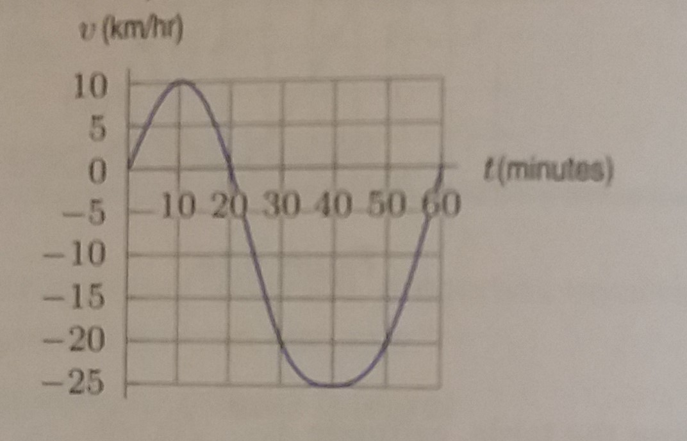

Calc I Integrals review
- Evaluate the following integrals:
- \(\displaystyle \int_0^{\pi/4} \tan x ~dx\)
- \(\displaystyle \int \frac{4-x}{x^2 - 16} ~dx\)
- \(\displaystyle \int \frac{y^3 + y - \sqrt{y}}{y^2} ~dy\)
- \(\displaystyle \int \frac{2}{3-z} ~dz\)
- \(\displaystyle \int \frac{2e^x}{4e^x + 5} ~dx\)
- \(\displaystyle \int_4^6 \frac{x^2}{\sqrt{x^3 + 5}} ~dx\)
- \(\displaystyle \int \frac{\sin (\ln (2x))}{x} ~dx\)
- Evaluate the following limits:
- \(\displaystyle \lim_{x \to \infty} \frac{e^{-x}}{x^2 + 2x + 6}\)
- \(\displaystyle \lim_{x \to 0} \frac{\sin x}{x}\)
- \(\displaystyle \lim_{x \to \infty} \frac{x^3 - 2x^2 + 4}{x - \sqrt{3x} - 4x^3}\)
- Water is pumped out of a holding tank at a rate of \(5 - 5e^{-0.12 t}\) liters/minute, where \(t\) is minutes since the pumping started.
If the holding tank contains 1000 liters of water when the pumping started, how much water does it hold 1 hour later?
Is the pumping rate increasing or decreasing? Can you come up with an explanation for this?
- A bar of metal is cooling from 1000 degrees C to room temperature, 20 degrees C. The temperature, \(H\), of the bar \(t\) minutes
after it starts cooling is given by
$$H(t) = 20 + 980e^{-0.1t}.$$
- Find the temperature of the bar at the end of one hour.
- Find the average value of the temperature over the first hour.
- Is your answer to part b greater or smaller than the average of the temperatures at the beginning and end of the first hour?
Explain this in terms of the concavity of the graph of \(H\).
- An old rowboat has sprung a leak. Water is flowing into the rowboat at a rate \(r(t)\) given in the table below.
| t minutes |
0 |
5 |
10 |
15 |
| r(t) liters/min |
12 |
20 |
24 |
16 |
Compute an upper and a lower estimate for the amount of water that has flowed into the boat,
and draw a figure/graph that illustrates the lower limit.
- A bicyclist is pedaling along a straight road for one hour with a velocity shown in the figure below.
She starts out 5 kilometers from the lake and positive velocities take her toward the lake.

- Does the cyclist ever turn around? If so, when?
- When is she going the fastest? How fast is she going then? Toward the lake or away?
- When is she closest to the lake?
- When is she farthest from the lake?